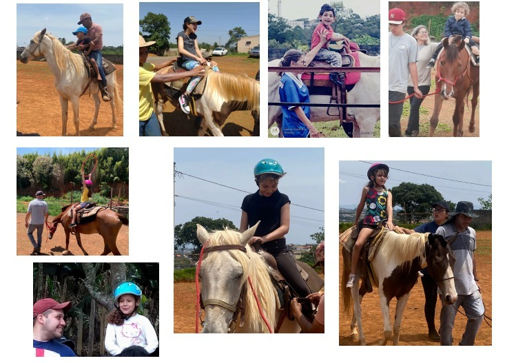

Equoterapia em conexão com a natureza para cuidar das pessoas
Promover múltiplos estímulos e evoluções, fortalecer a família e potencializar a inclusão para transformar o mundo.
Conheça Nossos ProjetosQuem Somos
ONG sem fins lucrativos, sediada em Suzano – SP, dedicada a desenvolver, habilitar e reabilitar pessoas com deficiência, síndromes, transtornos do neurodesenvolvimento e outras condições.
Aqui, a equoterapia é o ponto de partida para construir um mundo mais inclusivo, utilizando o cavalo como potente agente promotor de estímulos neurossensoriais e sensório-motores, entre outros benefícios que proporcionam aos praticantes evoluções reais nas diferentes esferas da vida pessoal, familiar, escolar e social.
Missão
Conduzir a equoterapia em conexão com a natureza, para cuidar das pessoas, transformar histórias e construir um mundo mais inclusivo!
Por que a Equoterapia transforma vidas?
Desenvolvimento Motor
O movimento tridimensional do cavalo estimula equilíbrio, coordenação, lateralidade e consciência corporal.
Cognição e Linguagem
Atividades direcionadas promovem avanços na atenção, funções executivas, comunicação e habilidades sociais.
Regulação Emocional
A interação com o cavalo estimula neurotransmissores essenciais para o bem-estar, autoestima e qualidade de vida.
O cavalo é o agente terapêutico que modela o processo de evolução.
Cada praticante recebe um plano personalizado definido por equipe multidisciplinar.
O que torna o Instituto Árion único?
Desde 2018 oferecemos acolhimento personalizado às famílias, integramos conhecimentos da Neurociência e Educação Inclusiva à prática da equoterapia e promovemos formação de educadores para garantir inclusão de forma integral.
A família é fortalecida como parte essencial do processo terapêutico, gerando resultados sustentáveis e histórias verdadeiramente transformadas.
Como apoiar nossos projetos
- Adote um praticante por 1 ano
- Indique o projeto para empresas que investem em Responsabilidade Social
- Seja voluntário(a) especialista
- Divulgue @instituto.arion
- Adote um cavalo ou doe insumos
Projetos e Conquistas
- Certificação de utilidade pública (Poá 2020 | Suzano 2024)
- Seminário de Educação Inclusiva do Alto Tietê – 3ª edição
- Mais de 400 pessoas atendidas desde a fundação
- Parcerias com Rotary, conselhos municipais e universidades
Parceiros e Apoiadores
Empresas e instituições que acreditam na inclusão e fortalecem a transformação social promovida pelo Instituto Árion.
- Rotary International
- Aroma e Sabor Gastronomia Inteligente
- Edcon
- Instituto Cuidando de Gente Desenvolvimento Humano